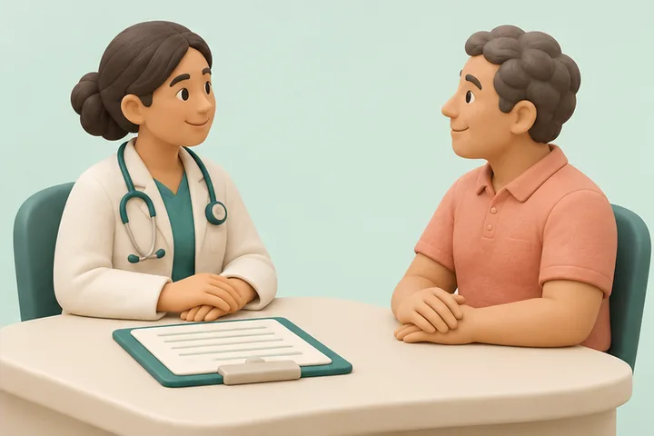

Antes
Pergunte qual forma de comunicação a pessoa prefere e providencie os recursos adequados.
ATENDIMENTO
Orientações rápidas para acolher, conversar e confirmar a compreensão durante a consulta.

Pergunte qual forma de comunicação a pessoa prefere e providencie os recursos adequados.
Dirija-se ao paciente, respeite suas decisões e cuide da privacidade, mesmo com intérprete presente.
Apresente orientações claras, dê espaço a dúvidas e verifique se a explicação foi compreendida.
EXEMPLO PRÁTICO
Anamnese é a conversa em que o profissional coleta informações relevantes para compreender o motivo da consulta e o histórico de saúde. Como tornar essa comunicação acessível?
Acompanhe a situação fictícia de Júlia e escolha como você agiria em três momentos do atendimento.

Exemplo pedagógico, sem dados reais. Não substitui protocolos assistenciais nem interpretação qualificada quando necessária.
O que significa anamnese? · Como explicar orientações escritas?